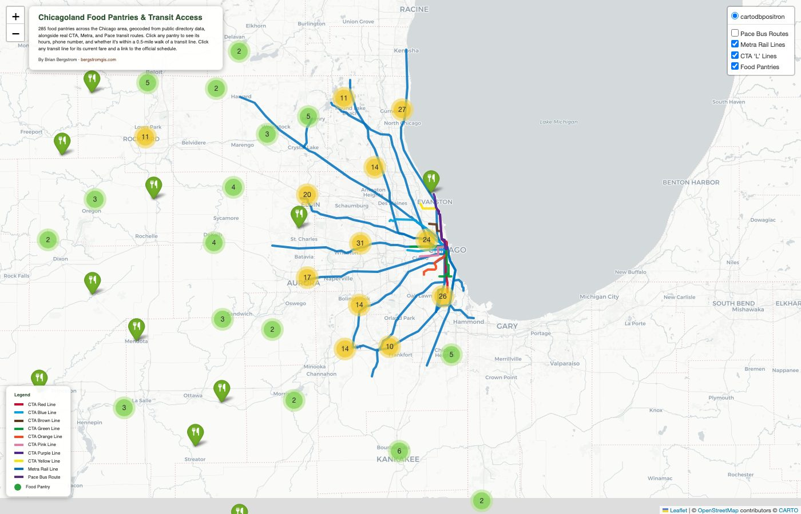

Chicagoland Food Pantries & Transit Access
An interactive map of food pantries across the Chicago metro area, cross-referenced against real transit lines to show who can actually reach help without a car.

Food access and transit access are the same question for a lot of people: it doesn't matter if a pantry exists if there's no practical way to get there. This project maps food pantries across a 90-mile radius of Chicago and checks each one against real CTA, Metra, and Pace route geometries to flag what's actually reachable on foot from transit — not just what's nearby on a map.
Real data, not a curated sample
The pantry list comes from scraping and deduplicating listings across 156 Illinois cities from a public food-pantry directory, then geocoding every address through the Census Bureau's official batch geocoder (with an OpenStreetMap fallback for the addresses it couldn't resolve). Hours of operation were extracted from freeform description text and normalized into consistent formatting — a messier, more honest process than it sounds, since real-world pantry listings are anything but standardized.
Transit data from the source, not guesswork
CTA, Metra, and Pace route geometries come directly from the RTA's own official ArcGIS feature service — the same authoritative source the agencies themselves use. Clicking any transit line pops up its current fare and a link to its real, live schedule page. Clicking a pantry shows its hours, phone number, and whether it falls within a half-mile walk of any of those lines, calculated as an actual spatial join, not an eyeballed estimate.
Building this surfaced a real data-quality problem: an official regional transit dataset listed Pace bus schedule links that pointed to a discontinued website. I traced it, found Pace's current URL pattern, and verified all 137 routes individually rather than trusting the source data at face value.
Live, interactive, and open source.
View the map (opens in a new tab) View the code (opens in a new tab)Let's talk about a job, a project, or both.
I'm open to full-time GIS Analyst roles and freelance/consulting work.